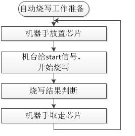

1.3. 机台自动烧录操作流程
1.3.1. 自动烧录介绍
目的
人工烧录速度慢，机台自动烧录可以大大提高烧录速度，解决人工烧录效率低问题。
实现说明
机台通过烧录器上的IO信号控制自动烧录，取代手动烧录中开始烧录（对应手动按开始按键）和烧录结果判断（人眼判断开始按键上的红绿灯状态）两个步骤中的相关工作。通过机器手放芯片到转接socket座上并执行开始烧录，机台实时监控IO信号对应的烧录状态，对烧录结果进行判断处理。
1.3.2. 自动烧录IO控制信号说明
1.3.2.1. IO控制信号线说明
机台自动烧录信号控制线，接转接板的“自动烧录IO控制信号线”，请参考《转接板介绍与安装》小节。
烧录器有两个通道的控制信号线，单个通道信号线有Start信号线，Busy忙信号线，Ok信号线，V3.3V，GND，控制信号线说明如以下表格所示。
编号 |
类型 |
Start（开始按键） |
Busy（绿灯） |
Ok（红灯） |
|---|---|---|---|---|
1 |
信号说明 |
机台供给烧录器 |
烧录器输出给机台 |
烧录器输出给机台 |
2 |
初始状态 |
高电平 |
低电平（绿灯灭） |
低电平（红灯灭） |
3 |
开始烧录 |
低电平(大于1mS，给低后拉高) |
/ |
/ |
4 |
正在烧录 |
/ |
高电平（绿灯亮） |
低电平（红灯灭） |
5 |
烧录成功 |
高电平 |
低电平（绿灯灭） |
低电平（红灯灭） |
6 |
烧录失败 |
高电平 |
低电平（绿灯灭） |
高电平（红灯亮） |
Important
Start信号线：开始按键的输入IO引脚给大于1mS的低电平时烧录器执行开始烧录，建议低电平时间2mS~20mS,低电平持续时间大一点也没影响。开始按键按下
Start信号是低电平，抬起是高电平。
Busy忙信号线：Start信号拉低大于等于1mS时，
Busy忙信号线对应的IO引脚输出高电平（上升沿信号），烧录器开始烧录，对应于开始按键上的绿灯亮；烧录结束时，Busy忙信号线对应的IO引脚输出低电平（下降沿信号），对应于开始按键上的绿灯灭。
ok信号线：
Busy忙信号线上升沿，即开始烧录时，ok信号线电平被拉低（初始状态是低电平或高电平）；Busy忙信号线下降沿对应烧录结束，此时烧录成功对应ok信号线电平被拉低（开始按键的红灯灭），烧录失败对应ok信号线电平被拉高（开始按键的红灯亮）。
控制信号线接口的
V3.3V引脚为烧录器提供的一个3.3V电源，可以根据机台控制模块需要进行连接；控制接口的GND引脚必须与机台控制模块GND连接；
更直观的理解，请查看自动烧录《IO控制信号时序》小节。
1.3.2.2. IO控制信号时序
自动烧录IO控制信号时序如下图所示，结合上述的IO控制信号线说明进行理解。

1.3.3. 自动烧录操作流程
1.3.3.1. 自动烧录准备工作
自动烧录芯片程序前，确保执行了《手动烧录、校验、查空芯片操作流程》的相关操作，以防烧录过程出现一些异常问题，包括：
烧录前上电开机，进入准备正常显示界面（请参考《烧录器上电开机》小节）
确认或更新当前烧录器固件版本为需要的版本（请参考《烧录器固件版本确认及更新》小节，可不定时确认）
确认或更新当前烧录器内的目标芯片程序为要烧录的程序（请参考《部署目标芯片程序到烧录器》小节）
确认或设置当前烧录器工作模式为烧录模式（请参考《烧录器工作模式介绍与设置》小节）
自动烧录机台烧录环境搭建。
参考《转接板介绍与安装》，完成对应型号的烧录座安装到烧录器上。
把与烧录器连接的
机器手放置芯片的socket座安装到机台上根据上述《自动烧录IO控制信号说明》完成机台IO控制信号线接线工作。
盘装式芯片或编袋式芯片上下料环境搭建,其中下料分烧录成功的良品和烧录失败的不良品。
自动烧录环境整体烧录流程调试。
1.3.3.2. 自动烧录流程说明
自动烧录准备工作做好后，即可对芯片执行自动烧录。机台自动烧录流程大致如自动烧录流程所示：

自动烧录流程
以下通过表格的方式，对自动烧录流程进行介绍说明。
使用流程
说明
自动烧录准备工作
参考上小节内容《自动烧录准备工作》的介绍
机器上放置芯片
对应于手动取芯片并放置到专用烧录socket座的步骤
机台给start信号，开始烧写
机台给
开始按键的输入IO引脚大于1mS的低电平信号时，
烧录器执行开始烧录，对应于人手动短按开始按键烧写结果判断
机台识别开始按键上的Busy（绿灯）和Ok(红灯信号)，
通过IO信号状态来判断是烧录成功，还是烧录失败机器手取走芯片
如果判断为烧录成功，则机器上取走芯片放置良品区编袋；
如果判断为烧录失败，机器手取走芯片放置不良品区